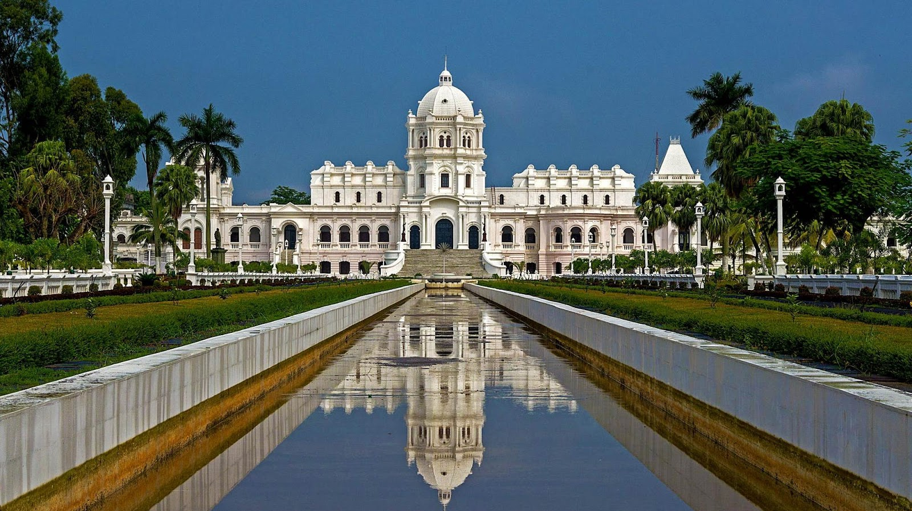
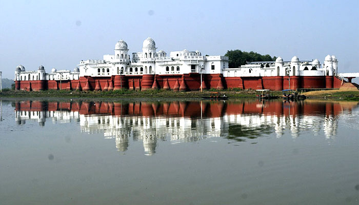

✈️ By Air
- Maharaja Bir Bikram Airport (Agartala): The second busiest airport in Northeast India.
- Connectivity: Excellent daily flights from Kolkata, Delhi, Guwahati, and Bangalore.
Tripura is a land of deep historical roots, once a princely state ruled by the Manikya Dynasty for centuries before merging with India in 1949. It is a unique cultural melting pot where 19 indigenous tribal communities (like the Tripuris, Reangs, and Jamatias) live in harmony with a significant Bengali population.
The state is famous for its royal palaces that float on water, ancient rock-cut carvings that rival the best in India, and a landscape dotted with bamboo forests and rubber plantations. It is a quiet, intellectual, and artistic hub, deeply influenced by the Nobel Laureate Rabindranath Tagore, who had close ties with the Tripura royal family.
Some Interesting Facts about Tripura:

The Royal Capital

The Shiva Pilgrimage

The Water Palace

The Land of Eternal Spring
Roads are generally good, connecting all major tourist spots.
Choose Your Vibe
Route: Agartala City
Route: Agartala ➔ Udaipur
Route: Udaipur ➔ Melaghar
Route: Melaghar ➔ Agartala
Route: Agartala
Route: Agartala ➔ Unakoti
Route: Unakoti ➔ Jampui Hills
Route: Jampui Exploration
Route: Jampui ➔ Agartala
| Time | Best For |
|---|---|
| October to March | Winter: The most pleasant time. Ideal for walking tours of Unakoti and boating at Neermahal. |
| October (Durga Puja) | Festivals: Agartala celebrates Durga Puja with as much grandeur as Kolkata. A great cultural experience. |
| November | Orange Festival: Held in Jampui Hills, celebrating the harvest of lush oranges. |
Important things to know before you pack your bags.
Unlike many other Northeast states, Indian citizens do not need an Inner Line Permit (ILP) to enter Tripura. You can travel freely.
Tripura is surrounded on three sides by Bangladesh. Your phone network might switch to an international roaming network near the border areas. Manually select your Indian carrier in settings to avoid charges.
Tripura is a fish-loving state. While vegetarian food is available (thanks to the Bengali influence), options might be limited in tribal areas. Paneer and Dal are usually available in tourist lodges.
Do not leave without buying bamboo handicrafts. The workmanship is exquisite. The Purbasha Govt Emporium in Agartala is the best place for authentic items at fixed prices.
When visiting temples like Tripura Sundari or walking through villages, dress modestly. Comfortable walking shoes are a must for Unakoti as there are many stairs.
Bengali and Kokborok are the main languages. Hindi is widely understood in Agartala and tourist centers. English works well in hotels and with officials.